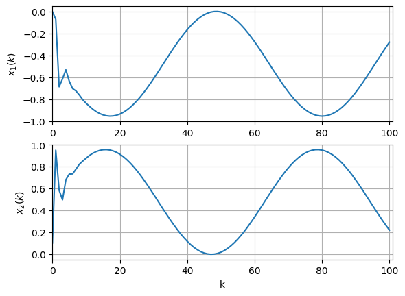
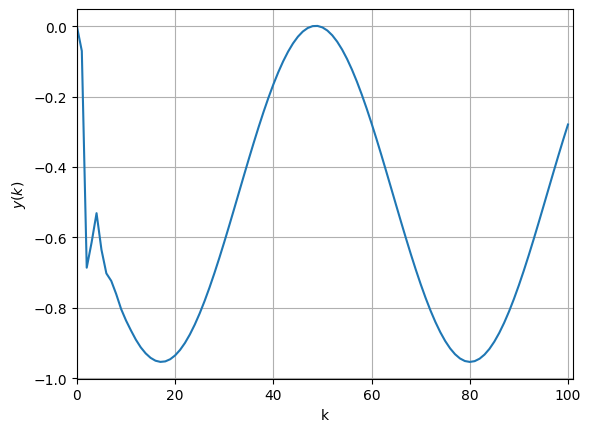

第6讲 基于结构化残差生成的故障分离策略略略略#
例1. 离散时间系统的数值仿真#
定义系统参数#
导入numpy模块
import numpy as np
系统参数矩阵 $\( A = \begin{bmatrix} 0.3 & -0.7\\ 0.6 & -0.5 \end{bmatrix}, B = \begin{bmatrix} 0 \\ 1 \end{bmatrix}, C = \begin{bmatrix} 1 & 0 \end{bmatrix} \)$
A = np.array([[0.3,-0.7],
[0.6,-0.5]])
B = np.array([[0],[1]])
C = np.array([[1,0]])
print(A)
[[ 0.3 -0.7]
[ 0.6 -0.5]]
设置仿真时间#
Nk = 101
tspan = np.arange(0, Nk, 1) # 从0到100
print(tspan)
[ 0 1 2 3 4 5 6 7 8 9 10 11 12 13 14 15 16 17
18 19 20 21 22 23 24 25 26 27 28 29 30 31 32 33 34 35
36 37 38 39 40 41 42 43 44 45 46 47 48 49 50 51 52 53
54 55 56 57 58 59 60 61 62 63 64 65 66 67 68 69 70 71
72 73 74 75 76 77 78 79 80 81 82 83 84 85 86 87 88 89
90 91 92 93 94 95 96 97 98 99 100]
预定义数据存储数组#
x = np.zeros((2,Nk))
u = np.zeros((1,Nk))
y = np.zeros((1,Nk))
print(y)
[[0. 0. 0. 0. 0. 0. 0. 0. 0. 0. 0. 0. 0. 0. 0. 0. 0. 0. 0. 0. 0. 0. 0. 0.
0. 0. 0. 0. 0. 0. 0. 0. 0. 0. 0. 0. 0. 0. 0. 0. 0. 0. 0. 0. 0. 0. 0. 0.
0. 0. 0. 0. 0. 0. 0. 0. 0. 0. 0. 0. 0. 0. 0. 0. 0. 0. 0. 0. 0. 0. 0. 0.
0. 0. 0. 0. 0. 0. 0. 0. 0. 0. 0. 0. 0. 0. 0. 0. 0. 0. 0. 0. 0. 0. 0. 0.
0. 0. 0. 0. 0.]]
变量初始化#
变量初值 $\( x(0) = \begin{bmatrix} 0 \\ 0.1 \end{bmatrix} , y(0) = Cx(0), u(0) = 1 \)$
x[:,[0]] = np.array([[0],[0.1]])
y[:,[0]] = C@x[:,[0]]
u[:,[0]] = 1
print(x[:,[0]])
[[0. ]
[0.1]]
进行数值仿真#
动态系统模型 $\( \left\{ \begin{array}{l} x(k+1) = Ax(k) + Bu(k) \\ y(k) = Cx(k) \end{array} \right. \)$
for k in range(1,Nk):
u[:,[k-1]] = 1 + np.sin(0.1*(k-1))
x[:,[k]] = A@x[:,[k-1]] + B@u[:,[k-1]]
y[:,[k]] = C@x[:,[k]]
[[ 0.00000000e+00 -7.00000000e-02 -6.86000000e-01 -6.13783392e-01
-5.31091853e-01 -6.34924258e-01 -7.02213188e-01 -7.23725690e-01
-7.60907033e-01 -8.03365038e-01 -8.36031357e-01 -8.64214005e-01
-8.90458422e-01 -9.12415686e-01 -9.29520449e-01 -9.42234405e-01
-9.50397409e-01 -9.53763720e-01 -9.52341478e-01 -9.46180867e-01
-9.35324969e-01 -9.19876233e-01 -8.99995210e-01 -8.75880932e-01
-8.47772590e-01 -8.15951279e-01 -7.80735371e-01 -7.42476581e-01
-7.01557094e-01 -6.58385820e-01 -6.13394126e-01 -5.67031534e-01
-5.19761285e-01 -4.72055693e-01 -4.24391414e-01 -3.77244694e-01
-3.31086608e-01 -2.86378352e-01 -2.43566635e-01 -2.03079219e-01
-1.65320641e-01 -1.30668171e-01 -9.94680460e-02 -7.20320068e-02
-4.86341855e-02 -2.95083653e-02 -1.48456451e-02 -4.79252997e-03
5.50532721e-04 1.13015684e-03 -3.05944902e-03 -1.19764237e-02
-2.55316718e-02 -4.35897536e-02 -6.59702389e-02 -9.24495092e-02
-1.22762992e-01 -1.56607806e-01 -1.93645784e-01 -2.33506856e-01
-2.75792742e-01 -3.20080935e-01 -3.65928924e-01 -4.12878610e-01
-4.60460887e-01 -5.08200328e-01 -5.55619938e-01 -6.02245915e-01
-6.47612388e-01 -6.91266070e-01 -7.32770787e-01 -7.71711839e-01
-8.07700139e-01 -8.40376104e-01 -8.69413246e-01 -8.94521437e-01
-9.15449803e-01 -9.31989235e-01 -9.43974477e-01 -9.51285775e-01
-9.53850078e-01 -9.51641764e-01 -9.44682899e-01 -9.33043011e-01
-9.16838405e-01 -8.96230990e-01 -8.71426668e-01 -8.42673278e-01
-8.10258112e-01 -7.74505054e-01 -7.35771334e-01 -6.94443968e-01
-6.50935886e-01 -6.05681805e-01 -5.59133890e-01 -5.11757231e-01
-4.64025201e-01 -4.16414723e-01 -3.69401504e-01 -3.23455285e-01
-2.79035146e-01]]
画图#
# 导入matplotlib模块中的pyplot函数
import matplotlib.pyplot as plt
画状态x的曲线
plt.figure()
plt.subplot(211)
plt.plot(tspan,x[[0],:].T)
plt.xlim([0,Nk])
plt.ylabel('$x_1(k)$')
plt.grid()
plt.subplot(212)
plt.plot(tspan,x[[1],:].T)
plt.xlim([0,Nk])
plt.xlabel('k')
plt.ylabel('$x_2(k)$')
plt.grid()
plt.savefig("Fig1.png", dpi=300)
plt.show()

画输出y的曲线
plt.figure()
plt.plot(tspan,y[[0],:].T)
plt.xlim([0,Nk])
plt.xlabel('k')
plt.ylabel('$y(k)$')
plt.grid()
# plt.savefig("Fig2.png", dpi=300)
plt.show()
